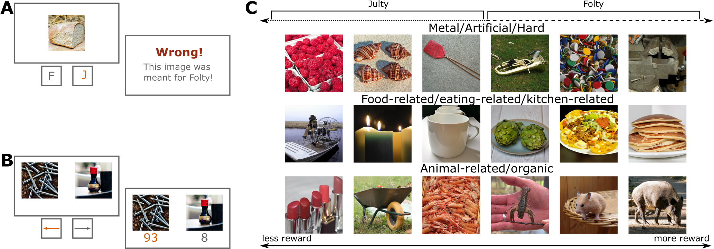

Read Me!
Code for the project “Language Aligned Visual Representations Predict Human Behavior in Naturalistic Learning Tasks”
Please see the paper for the associated work.
Abstract
Humans possess the ability to identify and generalize relevant features of natural objects, which aids them in various situations. To investigate this phenomenon and determine the most effective representations for predicting human behavior, we conducted two experiments involving category learning and reward learning. Our experiments used realistic images as stimuli, and participants were tasked with making accurate decisions based on novel stimuli for all trials, thereby necessitating generalization. In both tasks, the underlying rules were generated as simple linear functions using stimulus dimensions extracted from human similarity judgments. Notably, participants successfully identified the relevant stimulus features within a few trials, demonstrating effective generalization. We performed an extensive model comparison, evaluating the trial-by-trial predictive accuracy of diverse deep learning models’ representations of human choices. Intriguingly, representations from models trained on both text and image data consistently outperformed models trained solely on images, occasionally even surpassing models using the features that generated the task itself. These findings suggest that language-aligned visual representations possess sufficient richness to describe human generalization in naturalistic settings and emphasize the role of language in shaping human cognition.

Setup
I ran the analyses on a cluster system that used a SLURM job scheduler and a singularity image. Therefore the bash and slurm scripts are specific to that system. However, the singularity image is available on dockerhub and can be run locally using the following command:
docker pull candemircan/naturalcogsci:latestIf you want to use the singularity image, you can pull it as follows
singularity pull NaturalCogSci.sif docker://candemircan/naturalcogsci:latestIf you do not want to use containers, you can install the Python dependencies as follows:
git clone https://github.com/candemircan/NaturalCogSci.git
cd NaturalCogSci
pip install -r requirements.txt
pip install -e .For the versions of R dependencies, you can see the DOCKERFILE
Environment Variables
The code uses the environment variable NATURALCOGSCI_ROOT to determine the root directory of the project. You can set this variable in your .bashrc file (or whatever your shell rc file might be) as follows:
export NATURALCOGSCI_ROOT=/path/to/NaturalCogSciFor me, R could not read this variable from the shell, so I had to set it in the ~/.Renviron file as well as follows:
NATURALCOGSCI_ROOT=/path/to/NaturalCogSciExperiments
Both experiments are shared under the experiments folder. See the README.md files in the respective folders for more information.
Stimuli
If you want to extract the features from the images , you need to download the THINGS database under the stimuli folder.
This can be done from the following link:
Data
The data is shared in an OSF repository. It should be put under the data folder, if you want to use the code as is. All the behavioural (anaonymised) and modelling data can be found in the OSF repo. Further detail about the data are found under the README.md file in the data folder.
The OSF repository is here: https://osf.io/h3t52/
Citation
If you use our work, please cite our paper as such:
@misc{demircan2023language,
title={Language Aligned Visual Representations Predict Human Behavior in Naturalistic Learning Tasks},
author={Can Demircan and Tankred Saanum and Leonardo Pettini and Marcel Binz and Blazej M Baczkowski and Paula Kaanders and Christian F Doeller and Mona M Garvert and Eric Schulz},
year={2023},
eprint={2306.09377},
archivePrefix={arXiv},
primaryClass={cs.LG}
}